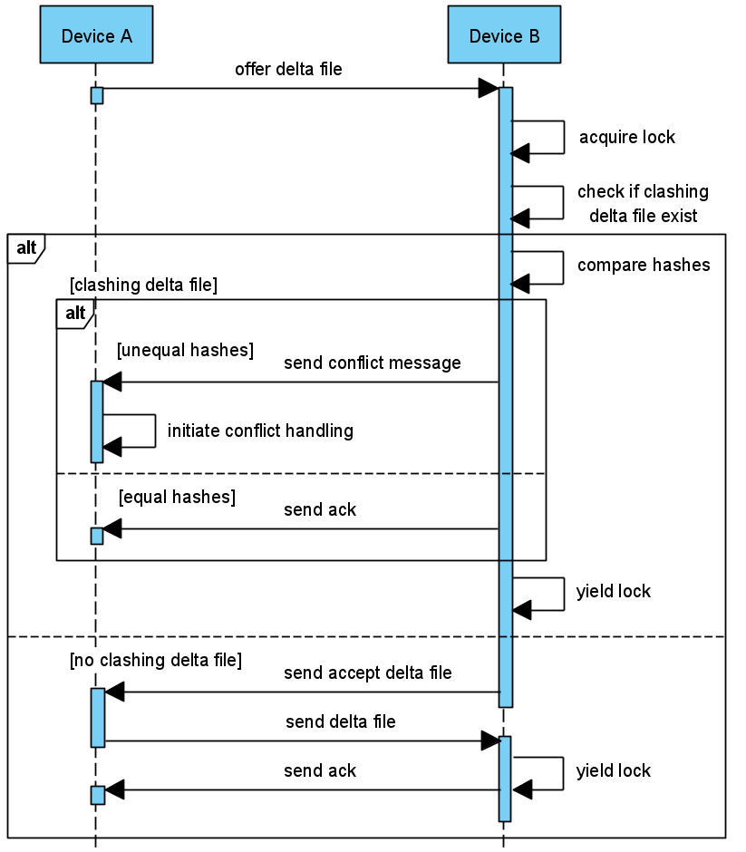

The Delta File Transfer Protocal

Abstract
Motivated by the UN’s sustainable development goals and
a lack of user transparency in cloud storage, we analyze
how we can improve a person’s digital storage of private
data beyond cloud storage solutions. We present an analysis
on how synchronizing files between a person’s devices
can be done by utilizing their unused storage. We
believe this can have positive effects regarding how electricity
usage and hardware production influence the environment.
We present our design of a distributed filesharing
system for local networks, which is implemented
as a fully-fledged Windows application. We use Node.js
and its extensive selection of packages to implement the
application and utilize a difference-algorithm to calculate
the delta between two versions of a file. We conduct tests
of the system’s features, states, and performance. In our
use-case specific performance test, using three devices, we
outperform Dropbox by ~0.34 seconds and Google Drive
by ~8.68 seconds but perform worse than Dropbox with
LAN sync by ~0.22 seconds. We conclude with a summarizing
view of our system: The system provides a way
to utilize unused storage resources by letting a user synchronize
files between their own devices, instead of using
a cloud-storage solution. Within our use case, it performs
well compared to the aforementioned commercial
systems, but lacks the extra functionality and consistency
that they provide.
My Contributions
The project was a collaboration between 5 people, therefore, I have decided to outline some features I worked on. My task on this project was interacting with the file OS of different devices and creating algorithms that could find differences between files and update them accordingly. In part with this task I had to create the minimum set of instructions when sending messages across the network to optimize for efficiency.